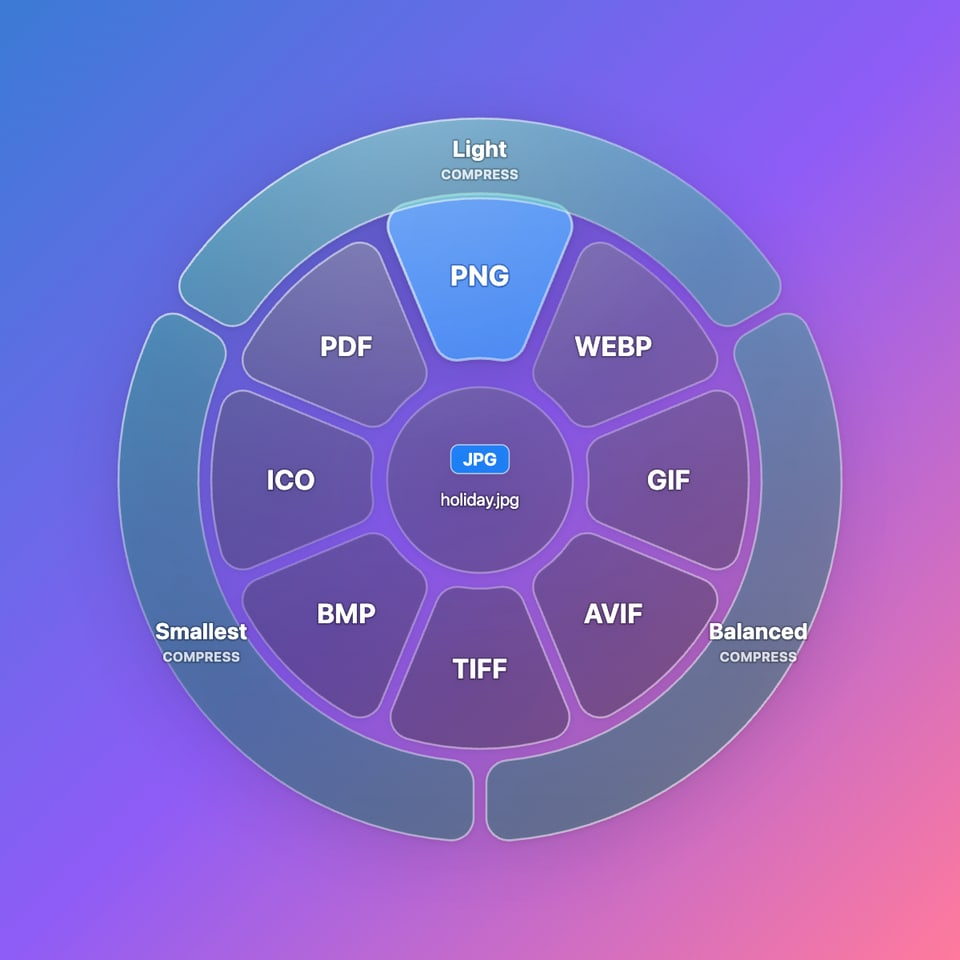

I love files
Convert any file by dragging it.
Drag, press C, drop. The new file appears right next to the original.

Three moves. That’s it.
- 1
Drag a file
Any photo, song, video, Word document or PDF, from Finder, Explorer or the desktop.
- 2
Press C
While still holding it. A glass ring of every format it can become appears around it.
- 3
Drop on a format
It lights up blue; let go. The new copy lands next to the original, which stays untouched.
Works with the files you use
Images
JPGPNGPDFWEBPGIFAVIFTIFFBMPICOHEIC
Music
MP3WAVM4AFLACOGGOPUSAIFFWMA
Video
MP4MOVMKVWEBMAVIWMV→ GIF→ MP3
Documents
DOCXPDFTXTHTMLMDPDF → PNG
Or make them smaller
Drop on the outer teal ring to compress photos, videos, music, PDFs and Word or PowerPoint files.
Light
Looks and sounds the same. Often half the size.
Balanced
A tiny, usually invisible trade-off for a much smaller file.
Smallest
Maximum saving, for sharing and email.
How to install
Mac
- Click Download for Mac: Apple silicon for M-series Macs, Intel for older ones (not sure? Apple menu → About This Mac). Open the downloaded .dmg file.
- Drag the I love files icon onto the Applications folder.
- Open Applications and double-click I love files. If your Mac says it can’t verify the app, click Done.
- Go to System Settings → Privacy & Security, scroll down and click Open Anyway, then Open. Only needed the first time.
- When asked, switch on Accessibility for I love files, so it can notice the C key.
- A ♡ appears in the menu bar. Done: it starts by itself from now on.
Windows
- Click Download for Windows and open I-love-files-Windows-Setup.exe.
- If you see “Windows protected your PC”, click More info, then Run anyway.
- It installs by itself in a few seconds. There’s nothing to click through.
- A pink ♡ appears in the system tray, by the clock (it may be under the ^ arrow). It starts with Windows from now on.
Uninstall: on Mac, quit from the ♡ menu and drag the app to the Bin. On Windows, use Settings → Apps → I love files → Uninstall.